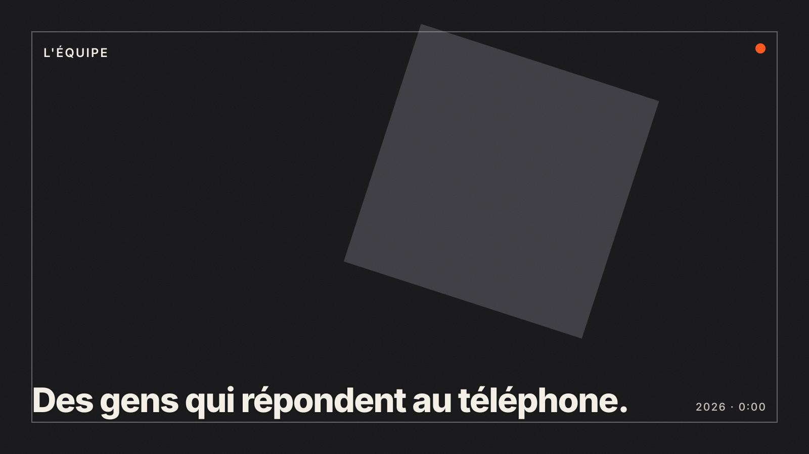

Méthode
Comment se déroule une production vidéo ?
Une production vidéo chez Pour Faire Simple. se déroule en six étapes : brief et conseil, conception, pré-production, tournage ou animation, post-production, livraison et diffusion. Pour un film corporate de 2 à 3 minutes, comptez 4 à 8 semaines entre le premier appel et le fichier final, avec un interlocuteur unique et deux allers-retours de modifications inclus à chaque étape de validation.
Les six étapes
-
01
Brief et conseil
On commence par la question qui compte : pourquoi cette vidéo ? Qui doit la voir, sur quel canal, et que doit-elle provoquer ? Un appel de 20 minutes suffit souvent à cadrer l'essentiel. Nous revenons ensuite avec une recommandation de format, une durée, un dispositif et un devis chiffré.
Si le brief révèle qu'une vidéo n'est pas la bonne réponse, on le dit. Ça arrive.
DélaiDevis sous 48 h ouvréesQuiDirecteur de production + directeur artistiqueLivrableRecommandation + devis détaillé par poste -
02
Conception
Selon le format : note d'intention et script pour un film, storyboard et moodboard pour du motion design, trame d'interview pour un portrait, calendrier éditorial pour une série. Vous validez par écrit avant que quoi que ce soit ne soit tourné ou animé. C'est l'étape où corriger coûte le moins cher.
Délai1 à 2 semainesQuiConcepteur-rédacteur, réalisateur ou directeur artistiqueLivrableScript, storyboard, moodboard, planning -
03
Pré-production
Casting de comédiens ou choix des collaborateurs à filmer, repérages, autorisations de tournage, matériel, plan de tournage heure par heure. Pour le motion design : charte graphique animée, premiers styles d'illustration, voix off enregistrée en témoin. Rien n'est laissé au jour J.
Délai1 à 2 semainesQuiChargé de production, réalisateur, chef opérateurLivrablePlan de tournage, feuille de service, styleframes -
04
Tournage ou animation
En prises de vues réelles, une équipe dimensionnée au projet : deux personnes pour un portrait, jusqu'à dix pour une publicité. Vous êtes bienvenu sur le plateau, un moniteur vous est réservé. En motion design, l'animation avance par séquences validées, avec un point d'étape par semaine.
Délai1 à 5 jours de tournage · 2 à 6 semaines d'animationQuiRéalisateur, chef opérateur, ingénieur du son, motion designersLivrableRushes sécurisés en double, animatique validée -
05
Post-production
Montage, motion design, étalonnage, sound design, mixage, voix off, sous-titres. Vous recevez une première version commentable en ligne, puis deux allers-retours sont inclus. Au-delà, chaque tour est chiffré à l'avance, sans surprise.
Délai2 à 3 semainesQuiMonteur, motion designer, étalonneur, mixeurLivrableV1 à J+5, V2, version finale validée -
06
Livraison et diffusion
Master et déclinaisons 16:9, 9:16, 1:1, sous-titres SRT et incrustés, miniatures, versions muettes si besoin. Un mémo de diffusion indique où publier quoi. Les sources sont archivées 24 mois et restituées sur demande selon le devis.
Délai48 h après validation finaleQuiChargé de productionLivrableFichiers, mémo de diffusion, cession de droits
Combien de temps prend chaque format, du brief au fichier final ?
Les délais ci-dessous sont des moyennes constatées. Ils tiennent si vos validations tiennent : c'est presque toujours là que se joue le calendrier.
| Format | Conception | Production | Post-production | Total |
|---|---|---|---|---|
| Snack content (lot de 4) | 1 à 2 jours | 2 à 3 jours | 2 à 3 jours | 5 à 10 jours ouvrés |
| Capsule Raconte... | 1 semaine | 1 journée | 2 semaines | 3 semaines |
| Motion design 2D 60 à 90 s | 1 à 2 semaines | 2 à 3 semaines | 1 semaine | 3 à 6 semaines |
| Film corporate 2 à 3 min | 1 à 2 semaines | 1 à 2 semaines | 2 à 3 semaines | 4 à 8 semaines |
| Motion design 3D | 2 semaines | 3 à 6 semaines | 1 à 2 semaines | 6 à 10 semaines |
| Publicité TV avec comédiens | 2 à 3 semaines | 2 à 3 semaines | 3 semaines | 7 à 10 semaines |
Qui fait quoi
Qui travaille sur votre projet ?
Une équipe cœur à Paris depuis 2013, nourrie au motion design, et un réseau de techniciens et de talents mobilisables en 48 heures. Vous avez toujours un interlocuteur unique, qui suit le projet du devis à la livraison.

Les noms, photos et parcours des personnes sont à fournir par Pour Faire Simple. Les rôles ci-dessous décrivent l'organisation type d'un projet.
- ·Directeur de production
Votre interlocuteur. Cadre le brief, chiffre, planifie, arbitre. Présent du premier appel à la livraison.
- ·Directeur artistique et motion designers
La colonne vertébrale historique de l'agence. Styleframes, animation 2D et 3D, habillage des films tournés.
- ·Réalisateurs et chefs opérateurs
Choisis selon le projet : interview, publicité, documentaire, food, industrie. Chacun a sa spécialité.
- ·Monteurs, étalonneurs, mixeurs
La post-production est suivie en interne, avec des spécialistes appelés selon le niveau d'exigence du film.
- ·Conseil en stratégie de contenu
Pour les clients qui produisent en série : ligne éditoriale, calendrier, formats, mesure.
Ce que nous nous engageons à faire, par écrit.
Ces engagements figurent dans nos devis. Ils sont la traduction concrète de l'obsession du service client.
Devis sous 48 h, planning contractuel
Une première estimation sous deux jours ouvrés, un planning en jalons signé avec le devis.
Aucun supplément non annoncé
Deux allers-retours inclus par étape. Toute demande hors périmètre est chiffrée avant d'être faite.
Vous êtes propriétaire de vos films
Cession des droits d'utilisation sur vos supports incluse. Musiques et voix off avec licences documentées.
Rushes sauvegardés en double
Copie sur deux supports dès la fin du tournage, archivage des sources pendant 24 mois.
Sous-titres inclus
Chaque livrable est fourni avec ses sous-titres, incrustés et en fichier SRT. Lecture sans son garantie.
Validation réglementaire anticipée
Santé, banque, assurance : mentions légales intégrées dès le storyboard, versions multiples prévues au devis.
Deux versions accélérées de cette méthode.
Nos offres packagées appliquent les mêmes six étapes, en version compressée, avec un prix fixe.